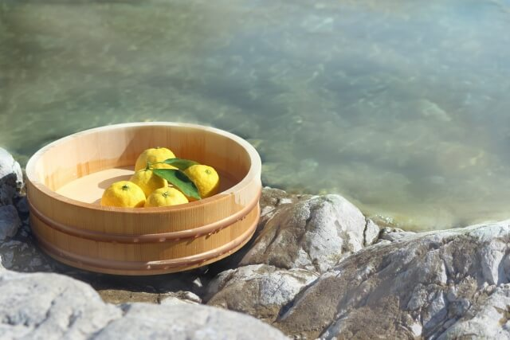
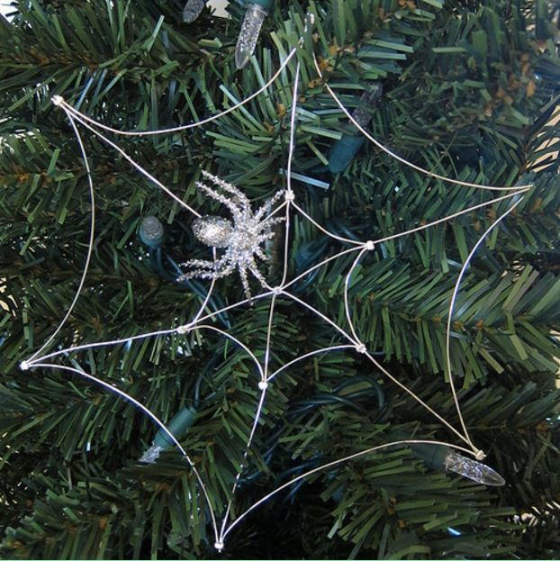

Toji
Hot spring with Lemons in a baskit
Rooted in the Chinese philosophy of ying & yang, the winter solstice in Japan symbolizes the harmony and balance of the life force. It is believed that the ‘yin’ of cold and darkness are at their most dominant on the shortest day of the year. Once the yin passes, the ‘yang’ of warmth and light will be upon us, and soon spring will return. Thus, winter solstice is a time to celebrate. Embracing the winter cold before taking a hot bath, and praying for good health before eating auspicious foods, Japanese happily carry on the customs and traditions of the winter solstice.
Lucky Spider Webs
Spider web ornament
In Ukraine it's believed that the webs will bring good fortune and luck for the upcoming year.
Chinese New Year

Chinese New Year, also known as Lunar New Year or Spring Festival, is the most important festival in China and a major event in some other East Asian countries. Chinese New Year is the festival that celebrates the beginning of a new year on the traditional Chinese lunisolar calendar. It was traditionally a time to honor deities and ancestors, and it has also become a time to feast and visit family members.